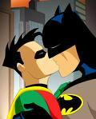

El Diario de Patricia
 De: La Frikipedia, la enciclopedia extremadamente seria.
De: La Frikipedia, la enciclopedia extremadamente seria.
cuando la patri cumplió 6 añitos (no pasan los años por ella)
Programa que ofrece Antena 3 por las tardes (donde abundan más las marujas), que explican la vida de unos cuantos desgraciados o subnormales. Durante muchos años fue presentado, por Patricia la hija de Hulk Hogan, pero ahora lo presenta una tal Sandra, pero da igual, toda presentadora que vaya o cualquier nombre que le pongan (Diario de Verano, Diario a secas, Diario y medio...), siempre sera El Diario de Patricia. Se cree que Hacendado es el principal patrocinador de este programa.
Este programa ya lleva sus añitos en antena y lo más increíble de todo es que siempre tratan los mismos temas, pero siempre nos sorprenden personajes peculiares, que muy bien podría ocupar una página de esta enciclopedia.
Como vienen las personas al programa
- Una de las razones es que la persona ha sido engañado por el programa y ha venido pensando de que hablarian cosas bonitas sobre él o una buena noticia, cuando es todo lo contrario.
- Otra razón es que han venido solamente a hacer el friki puro y duro y hacer un ridículo total en la televisión, o lo que es peor, hacer el ridículo a otra persona.
- Otra gente sabe lo que se va encontrar y les hace feliz. Por ejemplo, el regreso de un hermano perdido...
- Otros ya son pagados por el programa para que actuen en el programa para rellenar espacio.
Personajes y temas que se presentan
Este talk-show es frecuentado por distintos tipos de personajes, clasificados de la siguiente manera:
- Personas que van a conocer a su ciber-pareja. Normalmente, esto acaba en tragedia, ya que la foto que salia no es como respondia en la realidad y hacen un ridículo tremendo con cara de gilipollas. También puede ser el caso de que el tío entre a plató y la tía no lo conozca de nada. Entonces, la vergüenza pasa a ser del programa. Pocas veces, acaba bien...
- Asuntos familiares. Hay de muchos temas: como un hijo que pide dinero a sus padres, una pelea entre hermanos por la herencia, peleas contra suegros...
- Sujetos que vienen a hacer el friki y hacerse conocer. Bailan, cantan, dedican aniversarios de como lo hacen mejor quedarse en casita...
- Homosexuales que quieren hacer saber a sus padres que no son lo que ellos piensan. Mola las caras de satisfacción que ponen los protagonistas y la cara de sufrimiento que pone los padres. También, es de hijoputa, ir al Diario para decir a tu novio que llevas meses saliendo que eres transexual...
- Confesiones a la pareja de infidelidades y/o comportamientos deshonestos. Como por ejemplo, la tia que se quedó embrazada con una inyección de semen.
- Peleas entre vecinos como disputas judiciales por una lavadora, casos de Poltergeist, casos dignos de Expediente X, como un profesor de yoga que le hizo un mal de ojo a su alumna, un fantasma que le movía los huevos a un gitano, una deuda por unas naranjas...
- Proposiciones de boda (que no siempre salen bien) o rupturas matrimoniales en directo. Famoso el "coge el mobris y lo tiras".
- Abuelos que nunca han visto el mar por lo cual los llevan a barcelona o a algun sitio costero donde acaban devorados por Ozzy Osbourne.
- Finalmente, gente que quiere saber si su padre, es realmente su padre biologico con la prueba de ADN. La búsqueda de un familiar perdido...
Objetivo del programa
Este programa fue diseñado a corto plazo para hacer relleno en programas de zapping; y a largo plazo, para allanar el terreno a una futura ley de eutanasia selectiva que Hacendado aprobó en 2007. Uno de los mayores propositos es hacer que la gente se desmaye, se caiga por el paltó o se meta de ostias con las escaleras o la puerta asesina.
Presentadores
- Patricia: la mujer orgullosa que da nombre al programa. Ha sido la que más ha aguantado frikadas y otros problemas. Se retiró porque ya estaba harta de tanta memez.
- Sandra: Es la actual, no sabe lo que se le venía encima cuando le dijeron: oye! ven a presentar el Diario!. Pobrecilla...
- Juan y medio: El presentador suplente estrella de Antena 3. Lo pusieron en este programa porque no sabían donde ponerlo al pobre.
- La otra presentadora que nadie se acuerda de ella, ni siquiera su nombre.
- Y bueno, hay otra que esta buena, pero duró menos que un telediario...
Los frikis de Patricia
A continuación se detallan una serie de frikis agilipollados que sin ningun tipo de reparo fueron a hacer el ridículo ante toda España sin ser conscientes de sus actos (o sí):
 Batman declaró su amor por Robin en el diario de Patricia y triunfó.
Véase
Autor(es):
- Krusher
- Zeysoft
- La patata española
- Max Slug
- Meloh
- Karly
- Frikiman
- Aque
- Pr0orz1337
- Cybercrank
Frikipedia 2005-2016, Licencia
GFDL 1.2 - Extraído por FrikiLeaks